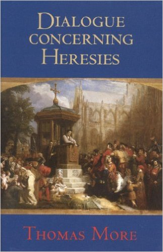
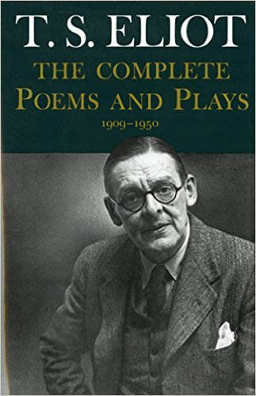

Books to Read
2017/02/18
The Karamazov Brothers
About 1/3 of the way through. Not as bad as I thought it might be.
I like this Oxford World's Classic translation. I tried the P&V, and it wasn't as good as I thought it might be. Monks punctuating their theological arguments with "So be it!" instead of "Amen"? "Dmitry Karamazov doesn't exist yet"? No thanks.
Also, the pages are away too thin, unfortunately - so the pages have to be kept close together until you're absolutely ready to turn.
Dialogue Concerning Heresies
Not too long, might be dry.
The Shape of the Liturgy
Very long, definitely dry. Also some of his assertions are supposed to be a bit out of date.
Medieval Pilgrims
Very short. Scholarly...

TS Eliot: Complete Poems and Plays: 1909-1950
I'd like to start going through this at some point.
